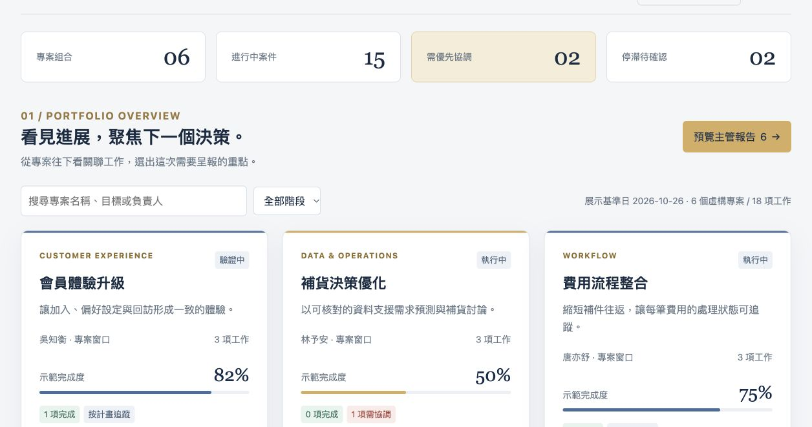

01 / THE PROBLEM
資料很多，卻不容易做決定。
團隊的日常紀錄分散在不同工作項目，主管難以快速辨識整體進展、停滯與風險；每次會議前還要重新整理報告。
專案管理儀表板
主管需要看見進度、交付風險，以及哪些事情需要介入。從專案總覽到活動型決策情境，將分散工作接成判斷、方案與執行追蹤。
Kris Lu / Kamiyu Lab · 獨立重製公開展示 · 全部虛構資料

01 / THE PROBLEM
團隊的日常紀錄分散在不同工作項目，主管難以快速辨識整體進展、停滯與風險；每次會議前還要重新整理報告。
02 / MY CONTRIBUTION
我負責管理需求釐清、儀表板建置與持續迭代，整理專案與案件的關聯、風險、Owner 與下一步。原工作版本曾經歷協作優化；此公開版另行重製介面與資料。
03 / THE DESIGN CHOICE
總覽保留專案完成度與有效樣本數；案件可依部門、負責人與狀態追蹤；會議頁聚焦到期與人工風險，再挑選專案組成管理報告。
NEW SCENARIO / MANAGEMENT DECISIONS
新增「城市設計展」活動型專案管理示範情境：先看背板定稿延遲如何壓縮交付緩衝，再比較分批製作、調整分工與額外製作時段，記錄負責人、判斷理由及下次追蹤時間。
選定方案不會自動轉綠。回填執行結果與完成預估後，系統才重新判定燈號；原訂時程與當時決策保留在紀錄中。

另一項綠燈工作是「活動結束後撤場」：原訂夜間安排也可能需要額外投入，與延遲補救分開判斷。示範記錄預計及實際額外人時，不進行薪資計算或正式加班核准。
示範黃燈門檻為預估延遲率達 20% 或緩衝消耗達 80%，可在畫面調整。預估超出最晚交付為紅燈；缺少預估或資料過久未更新則為待確認。此版採固定曆時，未包含工作日曆與自動相依排程。
這是另行設計的虛構情境，用來展示管理需求如何轉成工具；不列為既有客戶導入成果。
PORTFOLIO & REPORTING
既有「專案總覽」「案件追蹤」「會議焦點」仍可使用。查看關聯工作、編輯會議重點，再挑選專案與呈報順序，預覽 A4 報告。
PUBLIC DEMO
既有 6 個虛構專案、18 項工作，另新增 1 個活動情境與 4 項工作。展示日期可調整；所有修改只存在瀏覽器，沒有公司資料或後端連線。數字用於展示互動，不代表實際工作成效。